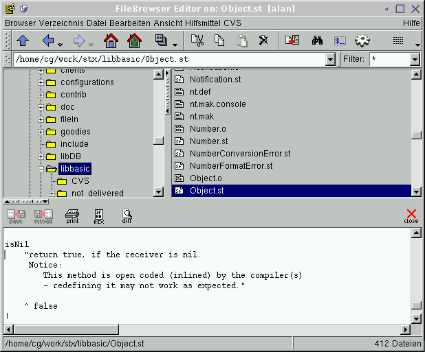

![[up]](../../../icons/DocsUpArrow.gif)
![[next]](../../../icons/DocsRightArrow.gif) The new FileBrowser is an improved version of the existing FileBrowser tool.
In addition to a tree-oriented presentation of the browser directory,
it offers bookmarks, improved history, multiple document editing (notebook)
ctags support and other many other new features.
The new FileBrowser is an improved version of the existing FileBrowser tool.
In addition to a tree-oriented presentation of the browser directory,
it offers bookmarks, improved history, multiple document editing (notebook)
ctags support and other many other new features.
A new fileBrowser can be either started via the
Launcher,
or by evaluating the Smalltalk expression:
FileBrowserV2 open
The above starts the browser in the last visited directory.
To start a browser on some other directory, evaluate:
FileBrowserV2 openOn:'someDirectory'
Typically, after startup, it looks like:

It consists of 3 main subviews plus a variety of menu panels and fields.
These components are:
- Toolbar Menu
Provides buttons for the most frequently used (menu-) functions.
- Path Field
shows the name of the current file/directory and (via a pulldown list) a history of previously
visited directories. Also allows changing the directory.
- Filter Field
allows a file name match pattern to be entered. Only files whose name matches the pattern are
shown in the directory-contents-filelist.
- Directory Tree
displays the directory hierarchy.
- Directory Contents
shows the selected directory's contents.
- Tag List View (not shown in the above image)
displays a teg list for the selected file.
This is contents specific; for example, for a C-source code file,
a list of functions is shown. For an html document, a list if header tags is presented.
This list allows for fast navigation within a file.
- Contents View
displays the selected file's contents.
- Info Fields
displays information related to the last operation, the currently edited file
and the currently shown directory.
In addition, it shows the encoding of the file being edited, the cursor position and
the editing mode.
The
directory contents list will only show files matching the pattern in
the pattern field (if a pattern was entered).
To see the contents of a file, simply double-click on the
corresponding name entry in the directory contents list.
If the selected item is a text file, its contents is shown in the
contents-view.
The contents view knows how to present certain files;
for example, if you select a bitmap file, the bitmap image is shown.
All of the above mentioned subviews provide a popup menu, which is
activated by the middle mouse button
(or the right button, if you use a 2-button mouse).
- By the way:
-
pressing an alphabetic key in the fileList will make it scroll
to the next entry whose name starts with that character.
If you press "SHIFT" at the same time, it
finds the previous entry starting with that character.
Typing "RETURN" executes the double click function
on the selected entry.
Also notice that "CURSOR_UP", "CURSOR_DOWN"
"HOME" and "END" keys
too can be used to change the selection, while "PAGE_UP"
and "PAGE_DOWN"
scroll the list.
This is true for all views which show a list to select entries from.
Next: New Features
![[stx logo]](../../../icons/stx.gif) Copyright © 2002 eXept Software AG, all rights reserved
Copyright © 2002 eXept Software AG, all rights reserved
<info@exept.de>
Doc $Revision: 1.12 $ $Date: 2016-09-14 09:41:13 $